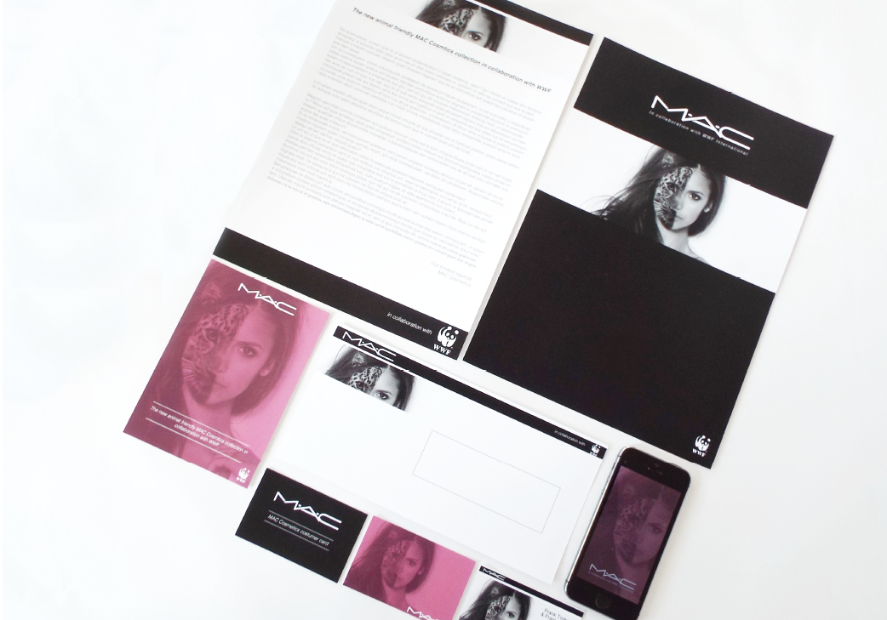
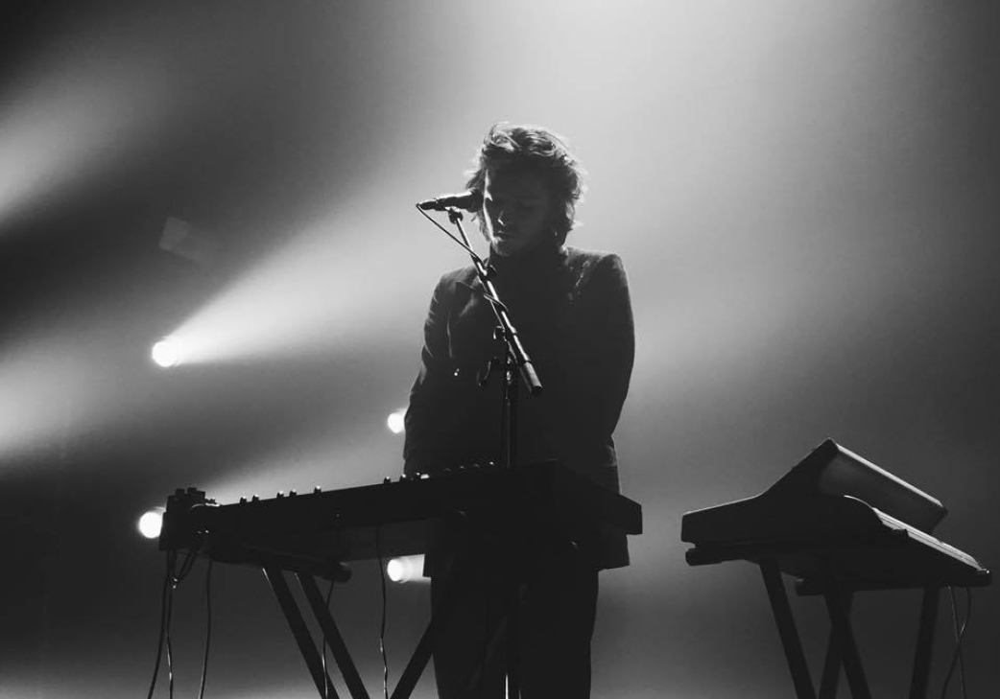

BREATHE
Het bedenken van een typografisch logo voor een wellness en gezondheid zaak genaamd Breathe. Hierna zijn we verder gegaan met het ontwerpen van een poster. Hier was de grote blikvanger een illustratie gecreëerd a.d.h.v van een vooraf gemaakte collage.
Het bedenken van een typografisch logo voor een wellness en gezondheid zaak genaamd Breathe. Hierna zijn we verder gegaan met het ontwerpen van een poster. Hier was de grote blikvanger een illustratie gecreëerd a.d.h.v van een vooraf gemaakte collage.

VERHOFSTEDE
Voor het fruitsappen merk hebben we nieuwe logo’tjes ontwerpen gebaseerd op een zelfgemaakte aquarel achtergrond. De verschillende kleuren staan voor de verschillende vruchten die ze gebruiken in hun sappen.
Voor het fruitsappen merk hebben we nieuwe logo’tjes ontwerpen gebaseerd op een zelfgemaakte aquarel achtergrond. De verschillende kleuren staan voor de verschillende vruchten die ze gebruiken in hun sappen.
CHOAS
Handlettering is helemaal hip nu! Dus wij doen ook mee! Hier hebben we een klein handlettering projectje gemaakt met de lyrics van Bazart en hun mega hit 'choas'. Just for the fun of it!
Handlettering is helemaal hip nu! Dus wij doen ook mee! Hier hebben we een klein handlettering projectje gemaakt met de lyrics van Bazart en hun mega hit 'choas'. Just for the fun of it!
MIJNE VLIEGER
We krijgen nooit genoeg van het mooie Gent. We gingen weer een dagje foto's nemen met de focus op schaduw en reflectie. Hierna werd de foto gebruikt als mooie postkaart met de lyrics van 'mijne vlieger' van Walter De Buck er op. Echt Gents!
We krijgen nooit genoeg van het mooie Gent. We gingen weer een dagje foto's nemen met de focus op schaduw en reflectie. Hierna werd de foto gebruikt als mooie postkaart met de lyrics van 'mijne vlieger' van Walter De Buck er op. Echt Gents!

HUISSTIJL WWF
Een huisstijl voor een collaboratie tussen WWF en MAC Cosmetics, die een cruelty free cosmetica lijn op de markt gaan brengen.
Een huisstijl voor een collaboratie tussen WWF en MAC Cosmetics, die een cruelty free cosmetica lijn op de markt gaan brengen.

MUZIEK FOTOGRAFIE
Muziek en fotografie zijn twee grote passies die ik graag samenbreng. Ik hou ervan om te spelen met de lichten, contrasten en kleuren. Ook gaan we graag met u aan de slag voor muziek-promotie werk.
Muziek en fotografie zijn twee grote passies die ik graag samenbreng. Ik hou ervan om te spelen met de lichten, contrasten en kleuren. Ook gaan we graag met u aan de slag voor muziek-promotie werk.

COLOURSPLASH
Voor dit project zijn we een dagje foto’s gaan nemen in onze prachtige hometown, Gent. Deze toffe foto, met een 'pop of colour' hebben we dan later gebruikt voor het maken van postkaartjes.
Voor dit project zijn we een dagje foto’s gaan nemen in onze prachtige hometown, Gent. Deze toffe foto, met een 'pop of colour' hebben we dan later gebruikt voor het maken van postkaartjes.
WOLFPACK ORIGINALS
Wolfpack originals is een kledinglabel van Lucas Heirbaut, goede vriend en mede student. We zijn samengekomen voor een street-styled photoshoot die gebruikt werd voor online-promotie via hun officiële website en sociale media
Wolfpack originals is een kledinglabel van Lucas Heirbaut, goede vriend en mede student. We zijn samengekomen voor een street-styled photoshoot die gebruikt werd voor online-promotie via hun officiële website en sociale media
BASSVISION
Bassvision is een nieuw drum n' bass feest georganiseerd in jeugdhuis lodejo. Het is een volledig nieuw concept daarom hadden ze eerst een logo nodig en daarna een poster om hun allereerste editie te promoten.
Bassvision is een nieuw drum n' bass feest georganiseerd in jeugdhuis lodejo. Het is een volledig nieuw concept daarom hadden ze eerst een logo nodig en daarna een poster om hun allereerste editie te promoten.
G-STAR
Voor het Nederlandse kledingbedrijf maakten we een simpel en klassiek label voor aan een van hun vrouwen jeansbroeken. Het label bestaat uit 3 delen.
Voor het Nederlandse kledingbedrijf maakten we een simpel en klassiek label voor aan een van hun vrouwen jeansbroeken. Het label bestaat uit 3 delen.
CARWASH
De chiro hield een carwash om geld in te zamelen. Maar natuurlijk moeten ze hiervoor eerst veel klanten kunnen aantrekken. Dit hebben we gedaan met een vintage-themed poster. We zijn trots om te zeggen dat de carwash een succes was!
De chiro hield een carwash om geld in te zamelen. Maar natuurlijk moeten ze hiervoor eerst veel klanten kunnen aantrekken. Dit hebben we gedaan met een vintage-themed poster. We zijn trots om te zeggen dat de carwash een succes was!
VERHOFSTEDE FLYER
Verderwerkend op het logo, hebben we voor het fruitsappen merk ook een flyer, poster, infobrochure en verpakking ontwikkeld. We hebben over de hele lijn het waterverf-effect doorgetrokken.
Verderwerkend op het logo, hebben we voor het fruitsappen merk ook een flyer, poster, infobrochure en verpakking ontwikkeld. We hebben over de hele lijn het waterverf-effect doorgetrokken.